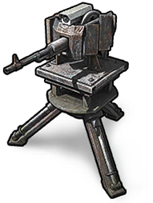

Construction
Items · ConstructionMachinegun Turret

Machinegun Turret / ConstructionCrafting recipe
Crafting recipeEach crafting batch produces 1 items. Materials below are required for one batch.


Recycling yield
Recycling yield

Item description
Craftable machinegun turret with the longest reach of any defence structure.